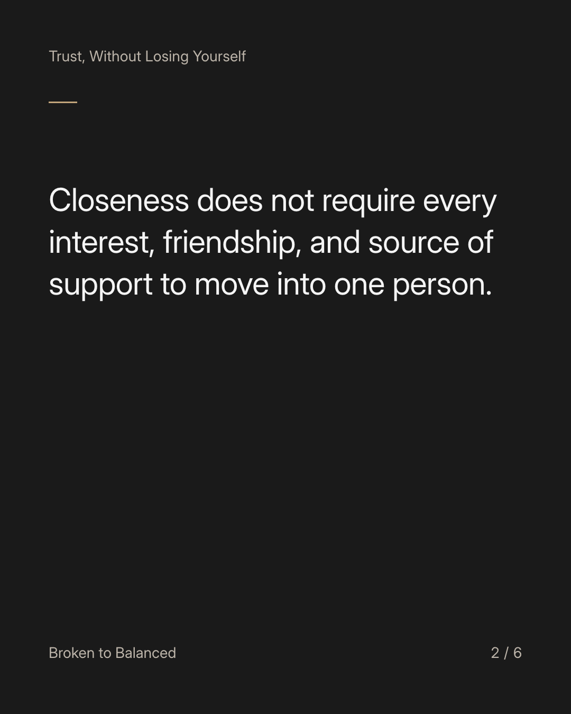
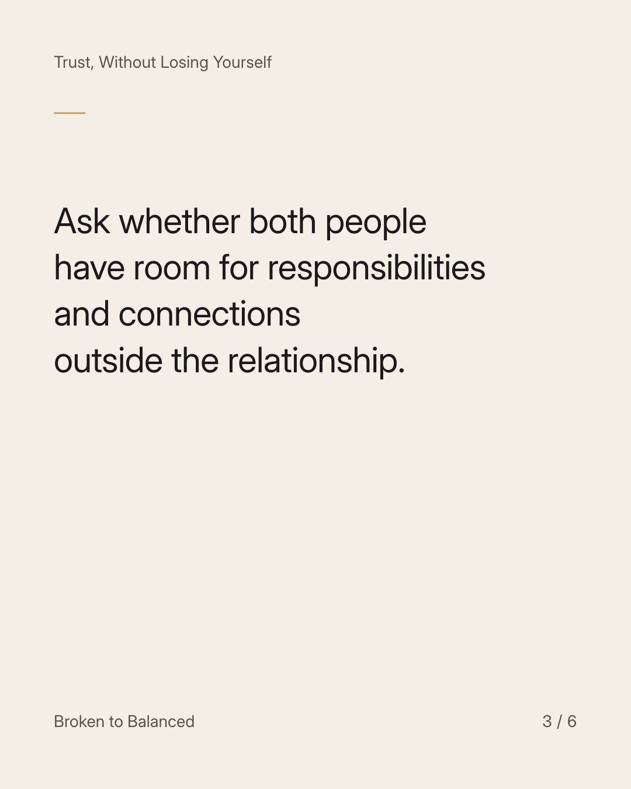
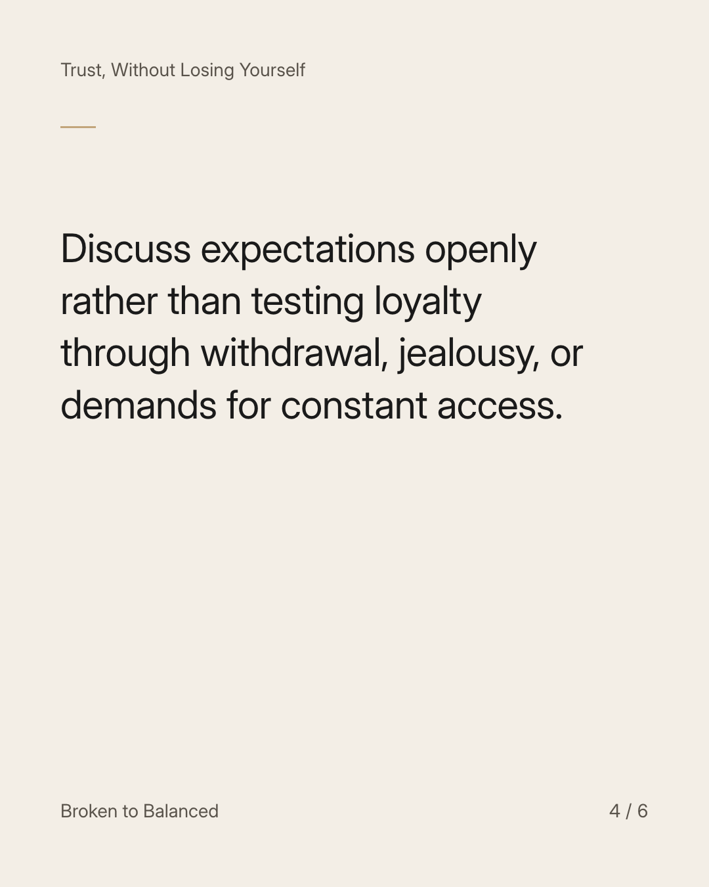
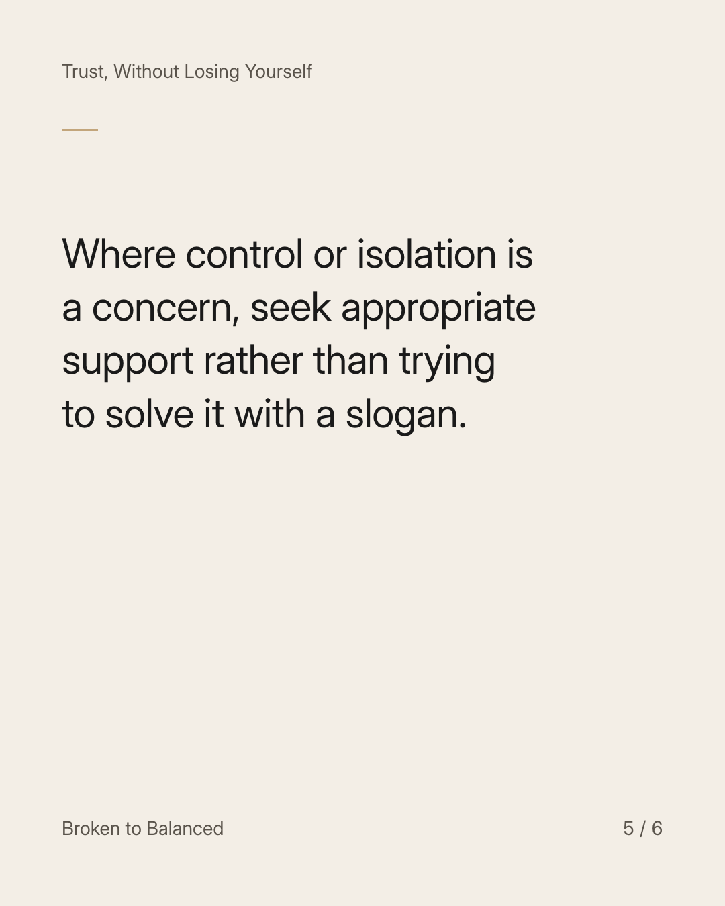
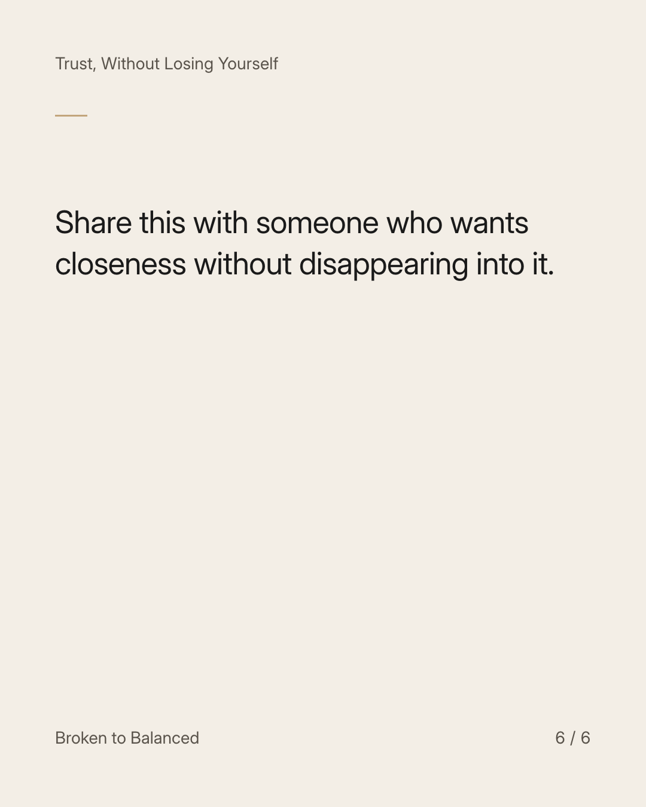

Exact text and accessibility text
A relationship can support your life without becoming the whole structure holding it up.
Slide 1 of 6. A relationship can support your life without becoming the whole structure holding it up.


Exact text and accessibility text
Closeness does not require every interest, friendship, and source of support to move into one person.
Slide 2 of 6. Closeness does not require every interest, friendship, and source of support to move into one person.


Exact text and accessibility text
Ask whether both people have room for responsibilities and connections outside the relationship.
Slide 3 of 6. Ask whether both people have room for responsibilities and connections outside the relationship.


Exact text and accessibility text
Discuss expectations openly rather than testing loyalty through withdrawal, jealousy, or demands for constant access.
Slide 4 of 6. Discuss expectations openly rather than testing loyalty through withdrawal, jealousy, or demands for constant access.


Exact text and accessibility text
Where control or isolation is a concern, seek appropriate support rather than trying to solve it with a slogan.
Slide 5 of 6. Where control or isolation is a concern, seek appropriate support rather than trying to solve it with a slogan.


Exact text and accessibility text
Share this with someone who wants closeness without disappearing into it.
Slide 6 of 6. Share this with someone who wants closeness without disappearing into it.
Exact caption
Plain-text fallback: select and copy the caption.